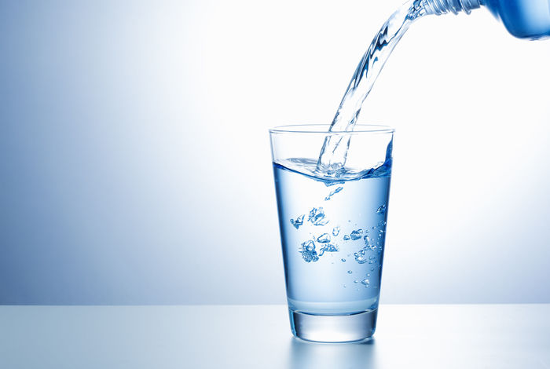

10 Beneficios del consumo del consumo de agua
–Resuelve el mal aliento El mal aliento es una clara señal de que el cuerpo necesita más agua. La saliva ayuda a tu boca a liberarse de bacterias y mantener la lengua hidratada. Por esto, cada vez que tengamos mal aliento, lo primero que debemos hacer es beber mucha agua. Además, la secreción de saliva es un protector natural de los dientes, por lo que tomar agua también contribuye a reducir las enfermedades dentales.

– Alivia la fatiga El agua es utilizada por el organismo para eliminar toxinas y productos de desecho que éste no necesita. Cuando hay menos agua en el cuerpo, el corazón tiene que trabajar más para bombear la sangre oxigenada a todas las células y otros órganos principales, y eso puede causar fatiga. Además, al acercarse a un estado de deshidratación, el organismo disminuirá el rendimiento muscular, lo que provoca esa sensación de cansancio. Beber agua es fundamental para que nuestro cuerpo funcione
– Evita el dolor de cabeza y las migrañas En la mayoría de los casos, la razón principal de los dolores de cabeza y migrañas es la deshidratación. Eliminar estas molestias, que también pueden darse en otras partes del cuerpo como la espalda, es uno de los beneficios de tomar dos litros de agua al día. ¡Pruébalo!
– Ayuda en la digestión y evita el estreñimiento Cuando bebemos suficiente agua aumenta la tasa de metabolismo, es decir, los alimentos que consumimos se descomponen apropiadamente. De esta forma, uno de los beneficios de beber agua en ayunas es ayudar a que el sistema digestivo funcione correctamente, previniendo el estreñimiento y mejorando la digestión, lo que a su vez repercute en la prevención de enfermedades y en una mejor calidad de vida.

– Ayuda a mantener la belleza de la piel Entre los beneficios de beber mucha agua se encuentra la reposición de los tejidos de la piel, así como su hidratación y el aumento de su elasticidad. El consumo de agua también ayuda a la piel con las cicatrices, acné, arrugas y otros síntomas de envejecimiento. En este caso, preocuparte por cuántos litros de agua hay que beber al día no es tan importante como el hecho de ser constante con el hábito. Tu piel te lo agradecerá.

– La termorregulación es otro de los beneficios de tomar agua Las propiedades térmicas del agua y su capacidad para liberar el calor del cuerpo cuando el sudor se evapora de la superficie de la piel son de gran ayuda en el mantenimiento de la temperatura corporal durante todo el día. Mantener nuestra temperatura corporal bien regulada nos hará sentir con más energía.
– Mejora el sistema inmunológico Cuando el cuerpo recibe la cantidad de agua adecuada, mejora el sistema inmunológico. A nivel más específico, los beneficios de tomar agua permiten al organismo luchar contra enfermedades como la gripe y contra los ataques al corazón, según la OMS. También contribuye de forma importante frente a otros problemas de salud como el reumatismo, la artritis, los cálculos renales, etc.